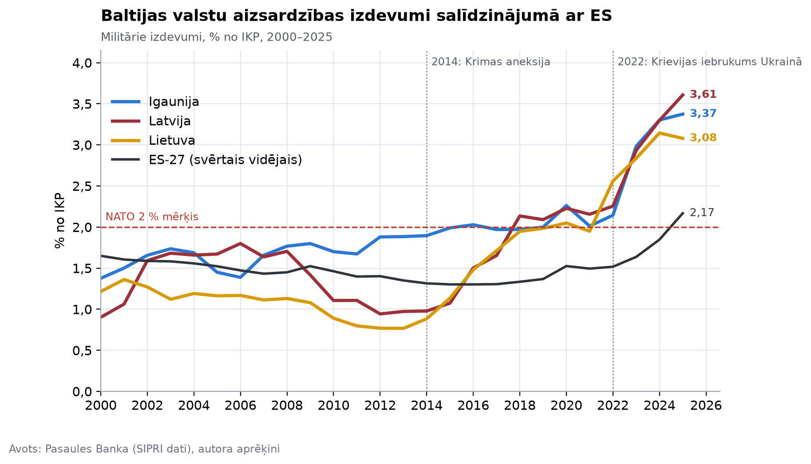
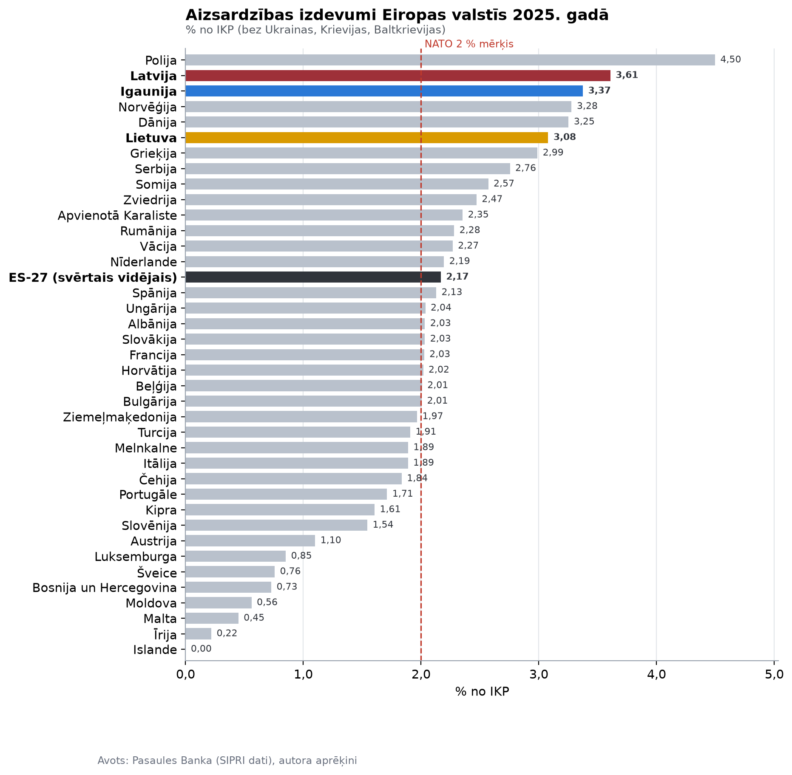
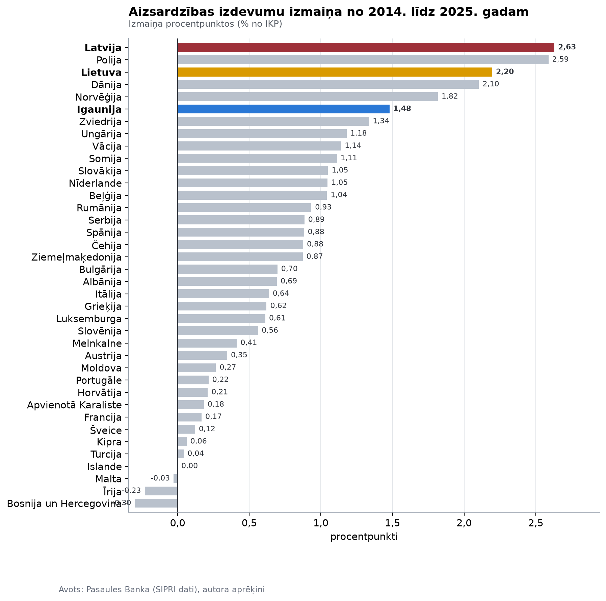
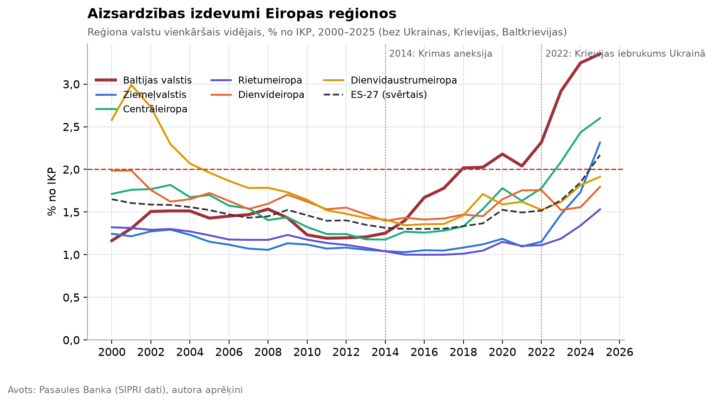
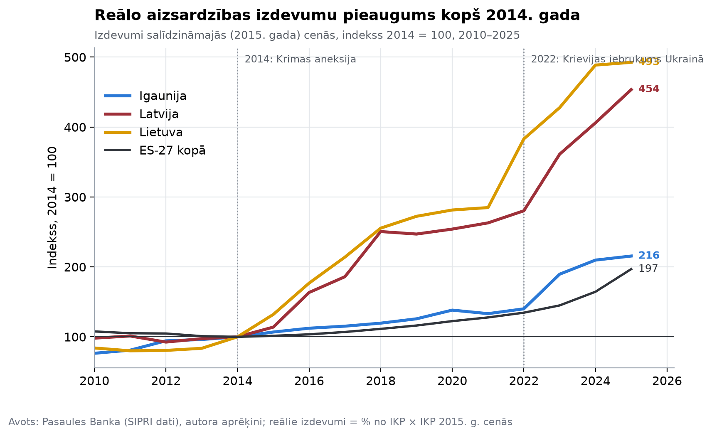
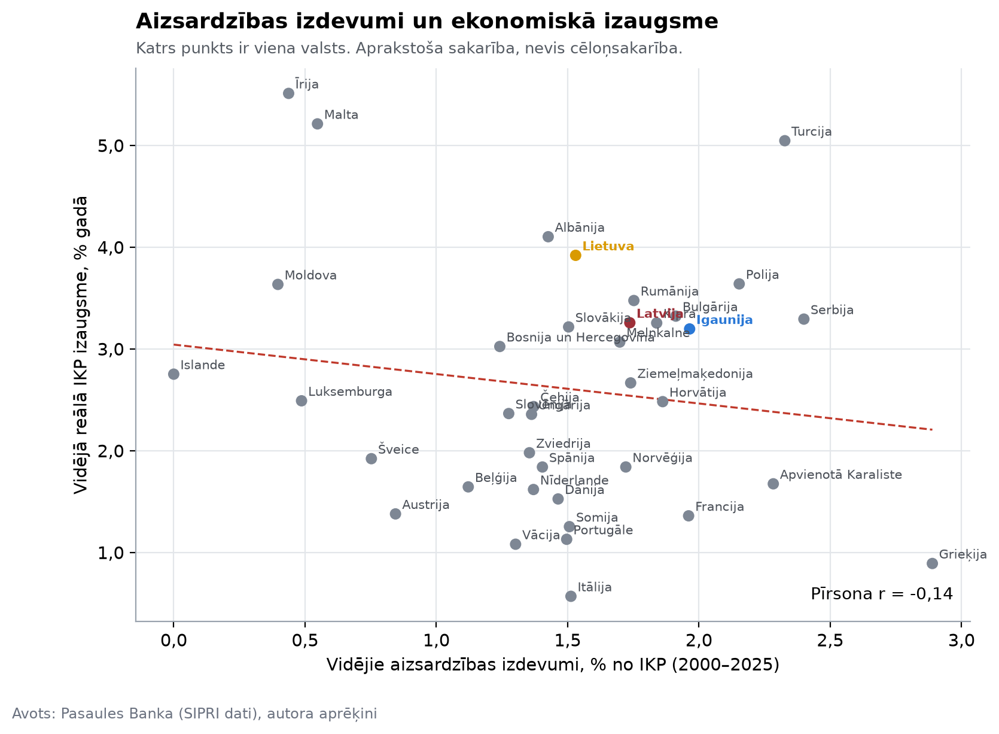
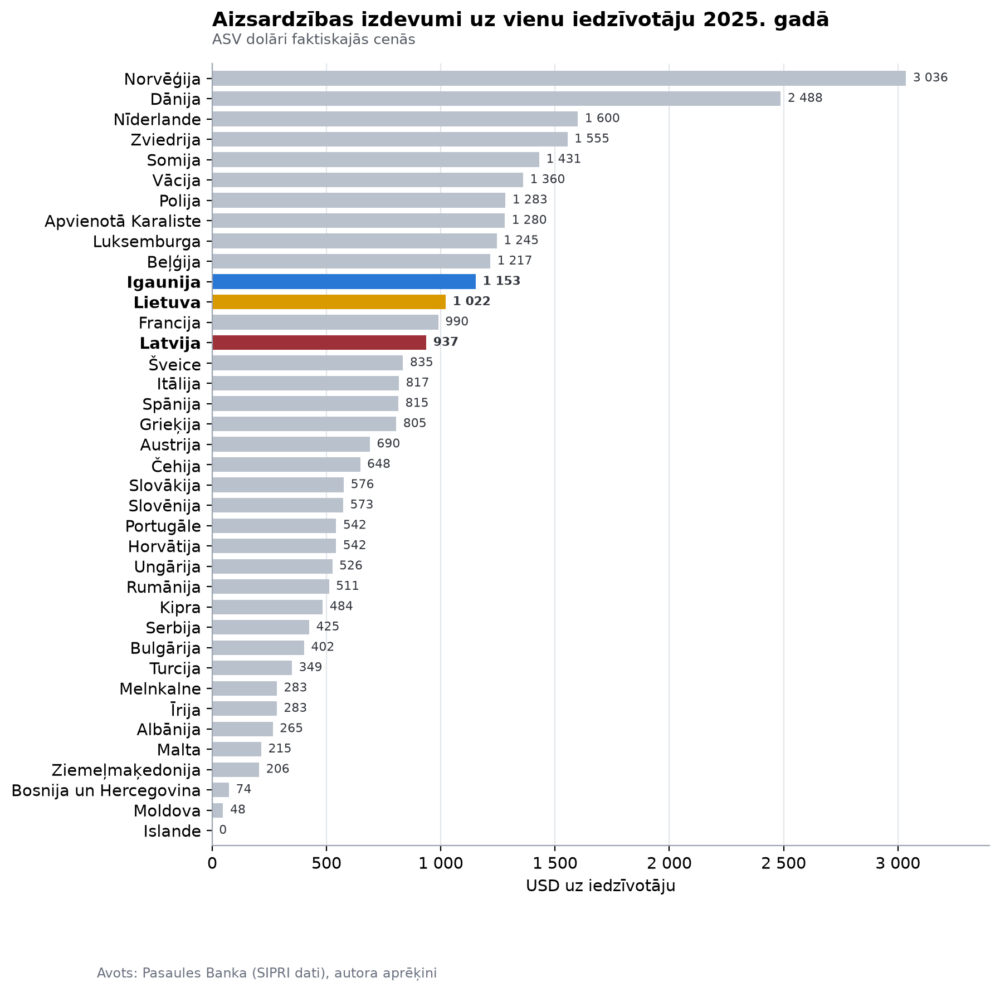
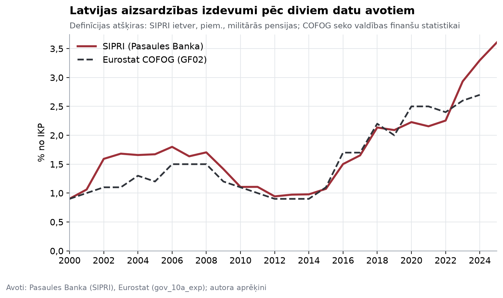

Aizsardzības izdevumi Eiropā, 2000–2025
Dati, aprēķini un grafiki kursa darbam par aizsardzības izdevumu tendencēm Eiropā, īpaši Baltijas valstīs. Dati tiek lejupielādēti un pārrēķināti automātiski. Pēdējā atjaunināšana: 2026-10-21.
Galvenie skaitļi
- 2025. gadā Latvija aizsardzībai tērēja 3,61 % no IKP (2014. gadā — 0,98 %, 2000. gadā — 0,90 %).
- Lietuva: 3,08 %, Igaunija: 3,37 %. Starp 38 Eiropas valstīm (bez Ukrainas, Krievijas, Baltkrievijas) Latvija ir 2. vietā, Lietuva 6., Igaunija 3.
- ES-27 kopumā (svērtais vidējais): 2,17 % no IKP 2025. gadā pret 1,31 % 2014. gadā.
- NATO Eiropas dalībvalstis, kas sasniedz 2 % mērķi: 21 no 30 2025. gadā (2014. gadā — 2).
- Augstākie izdevumi: Polija 4,50 %, Latvija 3,61 %, Igaunija 3,37 %.
Dati
Grafiki








Metodoloģija
Galvenais avots ir Pasaules Bankas datubāze, kuras militāro izdevumu dati nāk no Stokholmas Starptautiskā miera pētniecības institūta (SIPRI). SIPRI definīcija ietver bruņoto spēku, aizsardzības ministrijas, miera uzturēšanas spēku un paramilitāro vienību izdevumus, kā arī militārās pensijas. Salīdzinājumam izmantoti Eurostat valdības izdevumi pēc funkcijām (COFOG GF02 „Aizsardzība”), kuru definīcija ir šaurāka, tāpēc skaitļi var atšķirties. Reālie izdevumi aprēķināti kā izdevumu daļa no IKP, reizināta ar IKP 2015. gada cenās. ES-27 svērtais vidējais ir visu dalībvalstu kopējie izdevumi, dalīti ar kopējo IKP. Ukraina, Krievija un Baltkrievija ir datos, bet nav iekļautas reitingos un vidējos rādītājos, jo kara ietekme izkropļotu salīdzinājumu.
Korelācija starp izdevumiem un izaugsmi ir aprakstoša: tā neparāda, vai aizsardzības izdevumi ietekmē izaugsmi.